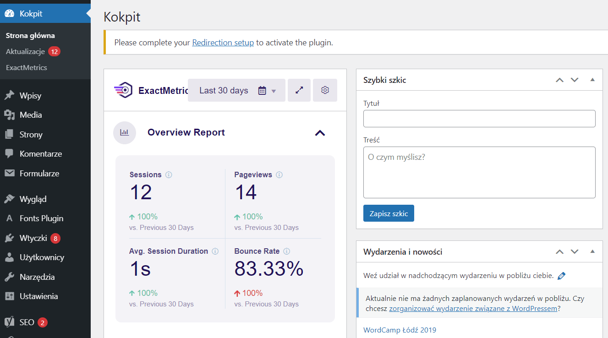
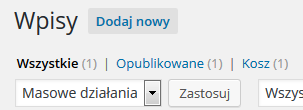
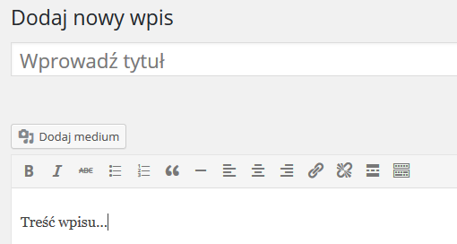
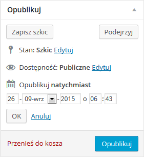

Prezentacja WordPress
Co to jest WordPress?
WordPress to inaczej oprogramowanie służące do łatwego i szybkiego zarządzania stroną. Rozpowszechniany jest na licencji GNU General Public License i możemy korzystać z niego za darmo. Jednakże, aby z niego korzystać należy wcześniej wykupić sobie domenę strony WWW i wrzucić pliki lokalne na serwer.
Co to CMS?
CMS (Content Management System) to system służący do automatycznego dodawania nowości na stronie. Za pomocą Systemu CMS (System Zarządzania Treścią) możemy dodać jakiś post, komentarz lub zdjęcie bez bezpośredniej ingerencji w kod. Klienci w ten sposób sami zarządzają swoją stroną w dowolny sposób, nie angażując w to programisty.
Do czego służy WordPress?
WordPress jest nam potrzebny gdy chcemy zarządzać treścią strony internetowej. do zautomatyzowania strony internetowej. Dzięki krótkiemu czas realizacji projektów sprawia rozwiązanie dla osób poszukujących multifunkcjonalnych narzędzi do budowy strony, zarządzania oraz przyszłego modyfikowania strony.
Posługiwanie się po WordPressie
Po zalogowaniu się zostajesz przekierowany do głównej części aplikacji.
Podstawowe informacje o każdym elemencie menu
-dashboard(kokpit) to miejsce, w którym WordPress kieruje Cię po zalogowaniu. To przegląd ostatnich działań na Twojej stronie.
-toolbar(pasek narzędzi) zawiera tytuł strony i niektóre opcje szybkiego dostępu. Znajdziesz tu również nazwisko osoby, która jest aktualnie zalogowana.
-menu znajduje się po lewej stronie administracji WordPress'a. Znajdziesz tu wszystkie narzędzia do edycji strony czyli wpisy, multimedia, strony, komentarze, wygląd, wtyczki, użytkownicy, narzędzia oraz ustawienia.
Funkcje WordPressa
Najważniejszą funkcją WordPress jest wielofunkcyjność oraz zautomatyzowanie stron internetowych. Dzięki użytkownikom możemy wybierać między tysiącami różnych szablonów, które dowolnie możemy edytować. Szablony są łatwe w pozycjonowaniu, wykonane z niezwykłą starannością oraz responsywne. WordPress dysponuje także wtyczkami, które rozbudowują stronę o wiele nowych funkcji. Ułatwiają pozycjonowanie, przyśpieszają działanie całej strony oraz dostarczają dane na temat ruchu na stronie. WordPress oferuję opcję dialogu poprzez komentarze na blogu, dzięki czemu zwiększa się interakcja z klientami. Ważnym elementem w większości stron w systemie WordPress są także Widgety. Te małe niezależne elementy interfejsu służą do wykonywania konkretnej funkcji, np. wyszukiwania na stronie, wyświetlania kalendarza zmian czy chmurki tagów
Pierwsze uzycie WordPressa
Aby dodać nowy wpis na strone musisz kliknąć opcjie w menu o nazwie "wpisy", a następnie wybrać "dodaj nowy". W nowym widoku znajdziesz pola odpowiedzialne za Tytuł wpisu: tutaj wprowadzasz tytuł swojego wpisu, który będzie wyświetlany na stronie. Treść wpisu: tutaj wprowadzasz treść dla dodawanego wpisu. W tekście możesz uwzględnić cytaty, formatowanie tekstu oraz wstawianie obrazów. Widok Wizualny i Tekstowy: tutaj podczas tworzenia wpisu, możesz przełączać się pomiędzy jego widokiem wizualnym i tekstowym. Widok tekstowy przydaje się gdy chcesz samodzielnie wprowadzić kod HTML odpowiedzialny za formatowanie tekstu. Po zrobieniu wpisu oraz jego potwierdzeniu wyświetli się nam "menu publikacji", które zawiera informacje o stanie, dostępności oraz dacie publikacji. Gdy ustawimy odpowiadającą nam konfigurację wystarczy kliknąć przycisk "opublikuj" i pierwszy wpis pojawi się na stronie WWW.
  Wady i zalety
- Wady
- - Bezpieczeństwo - WordPress jest bardzo narażony na ataki lub na wirusy. W tym oprogramowaniu jest łatwo złamać różne zabezpieczenia, dlatego powinniśmy używać wtyczek i robić backupy.
- - Wtyczki - Wybór właściwej wtyczki wymaga często pewnej wiedzy i doświadczenia. Pewna funkcjonalność może być dodana przez wtyczki różnych autorów, a wybór tej właściwej wymaga testów.
- - Wydajność - Niestety wtyczki, a szczególnie zbyt duża ich ilość wpływają niekorzystnie na wydajność strony opartej o WordPress.
- Zalety
- - Szablony - W prgramie WordPress znajdziemy wiele ciekawych darmowych szablonów graficznych, które możemy wykorzystać.
- - Społeczność - Jeśli potrzebujemy odpowiedzi na jakieś pytanie możemy napisać na forum WordPressa. Możemy również skorzystać z oficjalnego supportu WordPressa.
- - Łatwy w użyciu - Program ten bardzo łatwo nam się obsługuje. Jest przyjazny dla nowych użytkowników, oraz dla nowicjuszy w branży IT. Nie wymaga od nas większego doświadczenia, jak Joomla lub Drupal.